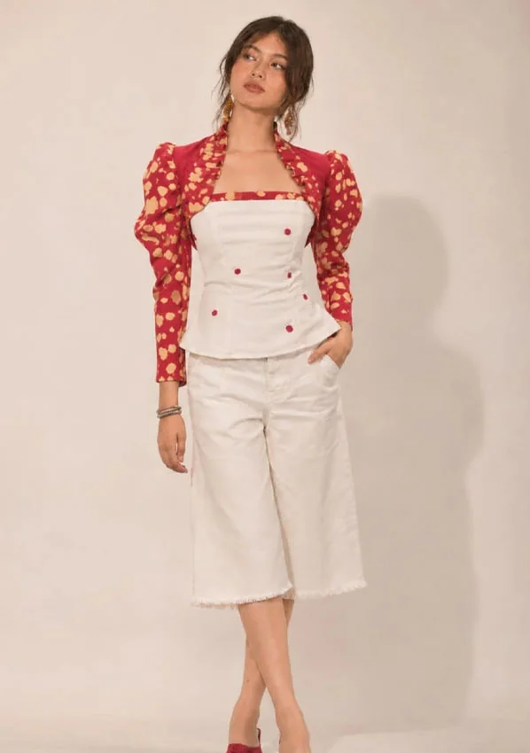
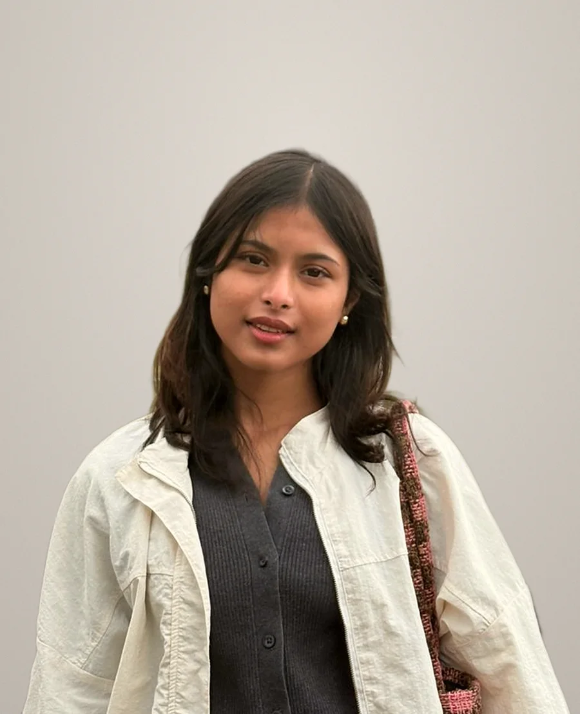

-
 N°01Styling & PhotographyFour shootsOpen →
N°01Styling & PhotographyFour shootsOpen →
-

N°02Garment CollectionBeneath the CanopyOpen →
Building the garment, styling the frame, taking the photograph — and now and then stepping in front of the lens.
Styling & Photography · Garment CollectionI’m Sayantika, a fifth-semester fashion design student at NIFT Srinagar. I draft the pattern, cut and construct the garment, then style it and photograph the story it belongs to. Sometimes I end up in front of the camera too.

From pattern paper to the final frame.
I’m looking for design internships where I can learn from people in the industry. I bring fresh ideas and keep working on my craft.
- Education
- Bachelor of Design, Fashion DesignNational Institute of Fashion Technology, Srinagar · 2024 — 2028Class XII, CBSEArmy Public School · 2023
- Software
- CLO 3DIllustratorPhotoshopInDesignLightroomProcreate
- Languages
- English · Hindi · Bengali
Skills
Collections, craft & the runway.
A few projects from the past two years. The full process for Beneath the Canopy is in Garment Collection.
-
A mushroom-inspired collection rooted in the hidden world of the forest. An 8-piece capsule wardrobe in denim, fully constructed and styled.
-
Inspired by secret teenage summers and romantic memories. A 6-piece capsule wardrobe in cotton, fully constructed and styled.
-
2024 — volunteered backstage, draping pashmina shawls on models without pinning or stitching the shawl. 2025 — designed, draped and walked the show.
-
Field research across the Jammu, Budgam and Srinagar clusters, including craft museums and the School of Design. It became a report and presentation on the craft and its origin.